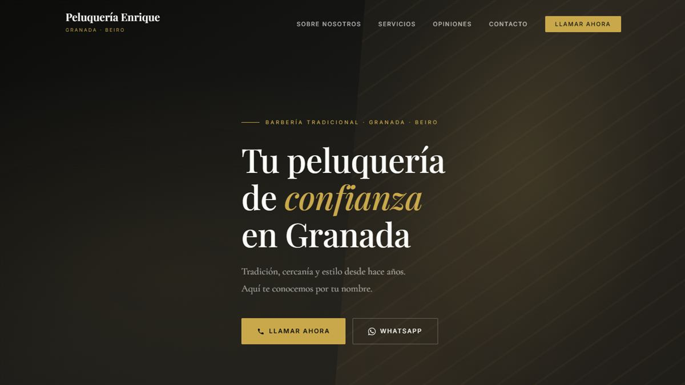

Caso · Peluquería Enrique
Veinte años de confianza, ahora también en Google
El problema
Más de veinte años de confianza de barrio en Beiro que no se traducían en presencia digital ni visibilidad local. Los clientes de siempre lo conocían; los nuevos, que buscan en Google "peluquería cerca de mí", no lo encontraban.

El proceso
- Estructura de conversión clásica y honesta: servicios con precios claros, testimonios reales y llamada a la acción directa. Sin artificios.
- Storytelling generacional: tres generaciones de una misma familia como clientes. Ese dato vale más que cualquier eslogan, y la web lo pone en el centro.
- SEO local: palabras clave de barrio y ciudad integradas de forma natural en el contenido, para aparecer exactamente cuando alguien de la zona busca.
- Tono de cercanía y tradición, deliberadamente alejado de la estética de barbería "moderna" — porque este negocio no es eso, y fingirlo restaría credibilidad.
El resultado
Sitio en producción en peluqueria-enrique.netlify.app.
Lo que demuestra este caso
- Adaptación de tono y estructura al negocio real — este proyecto no comparte plantilla ni estética con Eifagas ni con Taberna Ferry.
- SEO local aplicado como estrategia, no como casilla que marcar.
¿Tu negocio de barrio necesita aparecer cuando lo buscan? Hablemos.
Contactar